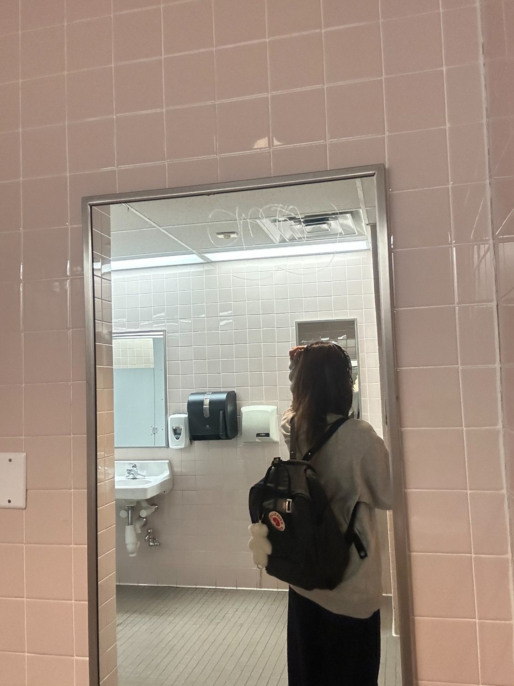

Through the Glass
I walk through the mirror.
Your fingertips meet cold glass, then open air. On the other side is a hallway lined with doors. One is painted gold. Another is covered with childhood drawings. A third is almost invisible.

Your fingertips meet cold glass, then open air. On the other side is a hallway lined with doors. One is painted gold. Another is covered with childhood drawings. A third is almost invisible.